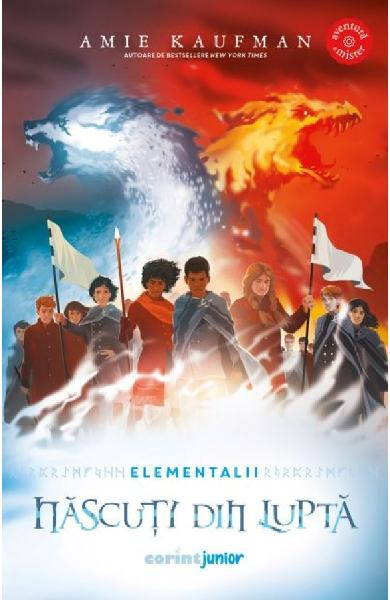

Nascuti din lupta
Amie Kaufman
Tensiunea creste si evenimentele iau o intorsatura neasteptata in noile aventuri ale gemenilor cu puteri magice. Desi Anders si prietenii lui reusesc sa amane razboiul dintre lupii ghetii si dragonii parjolitori, misiunea lor este departe de a se fi incheiat. Urmariti de adultii din ambele tabere, copiii se refugiaza in Salasul Norilor, o fortareata interzisa care le-ar putea oferi cheia pentru a-si salva casa. Dupa ciocnirea dintre Piatra Zapezii si Sceptrul Soarelui, Holbardul este distrus, iar locuitorii lui sunt nevoiti sa se adaposteasca in afara orasului, in niste tabere sumbre, fara hrana si fara speranta. Pentru a reconstrui Vallenul si a aduce laolalta dragonii parjolitori, lupii ghetii si oamenii, Anders si Rayna sunt nevoiti sa riste totul. Insa pretul pacii ii va aduce mai aproape de casa decat si-ar fi imaginat vreodata...